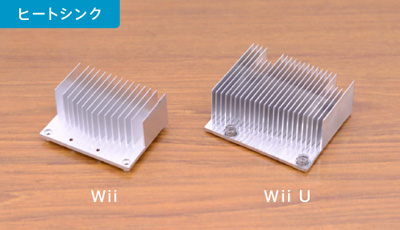
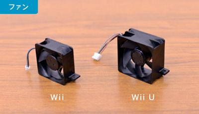
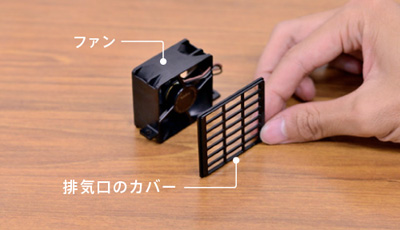
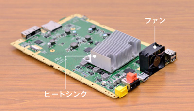
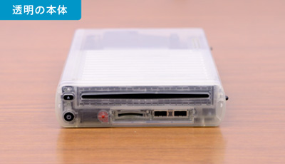
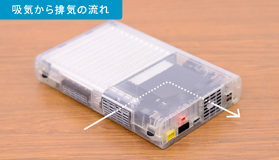
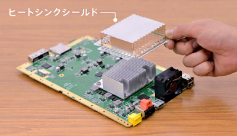

<div class="l-category-local-header">
<div class="category-local-header">
<div class="category-local-heading"><span>社長が訊く</span>
<div class="category-local-sub">IWATA ASKS


<div class="l-soft-topic-path is-block">
<div class="l-soft-topic-path-inner">
<div class="soft-topic-path">
<ul class="topic-path"><li class="topic-path-item"><span>『Wii U』 本体篇</span></li></ul>


<div id="page-container">
<header class="interviewheader">
<h2 class="interviewheader__ttl"><span class="subtext">社長が訊く</span>『Wii U』</h2>

</header>
<div class="tabmenu-container">
<p class="tabmenu__ttl">シリーズ一覧
<ul class="tabmenu__body tabnum12">
<li class="tabmenu__item tab1">本体 篇</li>
<li class="tabmenu__item tab2">Wii U GamePad 篇</li>
<li class="tabmenu__item tab3">Miiverse プロデュース 篇</li>
<li class="tabmenu__item tab4">Miiverse 開発スタッフ 篇</li>
<li class="tabmenu__item tab5">インターネットブラウザー 篇</li>
<li class="tabmenu__item tab6">Wii U Chat 篇</li>
<li class="tabmenu__item tab7">New スーパーマリオブラザーズ U 篇</li>
<li class="tabmenu__item tab8">ZombiU（ゾンビU） 篇</li>
<li class="tabmenu__item tab9">Nintendo×JOYSOUND Wii カラオケ U 篇</li>
<li class="tabmenu__item tab10">Nintendo Land 篇</li>
<li class="tabmenu__item tab11">Nintendo TVii 篇</li>
<li class="tabmenu__item tab12">Wii Street U powered by Google 篇</li>
</ul>

<div class="hero-container">
<div class="hero__img">

<div class="interviewsubheader">
<div class="interviewsubheader__ttl"><h2>本体篇</h2>

<div class="pageindex-container">
<p class="pageindex__ttl">目次
<ul class="pageindex__body">
<li class="pageindex__item">1. テレビが変わった</li>
<li class="pageindex__item active">2. ハードは“黒子”</li>
<li class="pageindex__item">3. “マジック”</li>
<li class="pageindex__item">4. テレビに寄生しないゲーム機</li>
</ul>

<div class="interview-container">
<h3 class="interview__ttl">2. ハードは“黒子”</h3>

岩田
: 「筐体を小さくしよう」という話は、<br>最初からクリアな目標として話があったんですか？<br>北野さん、どうですか？


北野
: はい。開発当初から、<br>あくまで本体は目立つものではなくて、<br>「“黒子”のような存在であるべき」ということを、<br>竹田さんからテーマとして与えられていました。


岩田
: でも、筐体の機構を考えるスタッフにとっては、<br>自分が頑張ってつくるものを、<br>「お前は黒子なんだ」って言われるのは、<br>どうやってモチベーションを保つかということも含めて、<br>なかなか難しい課題のような気もしますね。


北野
: はい。たしかに竹田さんの<br>言われることはわかるんですけど、<br>担当者としてはちょっと・・・さみしい部分もありながら、<br>粛々と作業をしていました。


岩田
: 粛々と（笑）。<br>黒子には黒子のプライドがあるんですよね。


北野
: はい（笑）。<br>それにWii UではWii U GamePadがあるために、<br>本体は極力シンプルにする方針を採りましたので、<br>ますます目立たない存在になってしまいました（笑）。


岩田
: そうはいっても、<br>Wiiよりずっとパワフルなマシンですから、<br>熱設計や筐体のサイズの問題など、<br>いろんな工夫があったんでしょうね。


北野
: はい！ 先ほど、ＬＳＩの話がありましたけど、<br>熱源がひとつになったのは大変大きいと思います。<br>Wiiの場合はふたつあって、両方とも冷やしていたんです。<br>これがWiiのもので、これがWii Uのものですが、<br>放熱させるためには、こういったヒートシンク（※15）を<br>置いておかないといけないんです。


<div class="interview__photo-l">



※15ヒートシンク＝放熱をさせるための金属の板。放熱器、放熱板。フィンと呼ばれる羽根のような板が生えた剣山状の形につくられることが多い。


北野
: Wiiに比べてWii Uは３倍くらいの発熱量がありますので、<br>いろんな知恵を絞りました。<br>たとえばファン自体を大きくしたりとか、<br>ファンの回転数を上げたりとかです。<br>試作品で熱実験を何度も行って、空気口の配置を最適化したり・・・。


<div class="interview__photo-l">


北野
: あと、細かいところですが、<br>ファンの後ろにこの排気口のカバーがあるんですが、<br>厚みを薄くしたり、<br>格子の内側に斜面を設けて空気を逃げやすくするような、<br>放熱を効率よくする工夫を重ねていきました。


<div class="interview__photo-l">


岩田
: なるほど。発売直後に掲載される分解記事みたいですね（笑）。<br>ひとつの魔法のようなアイデアがあるわけじゃなくて、<br>手数を重ねていくことで、発生する熱のわりにコンパクトにする、<br>ということの積み重ねなんですね。


北野
: そうです。<br>熱実験については、実験の回数だけで、<br>２０００回を超えました。


岩田
: え、２０００回ですか！？<br>それはちょっと、想像を絶していました。


北野
: １回の実験で１時間はかかるので、<br>それだけの時間をかけて検証して、いまの姿になっています。


竹田
: あと騒音実験をやるから、けっこう時間がかかるんですよ。


北野
: そうなんです。<br>ファンの回転数を上げると騒音が増えるので、<br>ゲームをしながら、どの程度の音であれば<br>許容できるかをチェックするんです。<br>回転数を調整すれば騒音も変わりますが、<br>同時に放熱量も変わります。<br>騒音と放熱のバランスを取るのも苦労した点のひとつです。


岩田
: やっぱり心臓部の熱源になるものは、<br>ファンのそばに置いたほうが有利なんですか？<br>このヒートシンクのところに、<br>たくさん空気が通ることが重要なんですよね？


北野
: そうですね。基本的な構造としては<br>ＭＣＭの上にヒートシンクが載って、その真後ろにファンがきます。<br>ヒートシンクにたくさん空気が通るほど放熱には有利ですが、<br>ある程度、空気の通り道をきっちり確保したうえで放熱しないと、<br>効率がよくないことも、実験でわかりました。


<div class="interview__photo-l">


岩田
: でも、この位置だと、<br>ドライブが空気の通り道を邪魔しちゃいますよね。<br>あ、これはわたしの単純な興味なんですけど・・・。


北野
: はい、ですから製品ではですね・・・。


<div class="interview__photo-l">


岩田
: ああっ！ 透明！ すごいな！


一同
: （笑）


岩田
: これ売ってください、わたしに（笑）。


一同
: （笑）


北野
: 基本的には、ここが排気口で、ここが吸気口になります。


<div class="interview__photo-l">


岩田
: あー、こう空気が回るんですね。<br>こういう構造を含めて全部、効率よく空気を流して、<br>熱を逃がすことにつながるんですね。


北野
: メインの吸気は側面部になりますが、<br>補助的に天面や底面前方にも吸気口を開けています。<br>あとは・・・いろいろアピールして恐縮ですけど（笑）、<br>この細かい穴があいている部品ですが、<br>これは“ヒートシンクシールド”と呼ばれるもので、<br>基板や電子部品から出る不要な電磁波を抑えるための部品です。


<div class="interview__photo-l">


岩田
: 熱は逃がさないといけないけど、<br>不要な電磁波はこの中に閉じこめないといけないってことですね。<br>穴の面積がすごく大きくて、編み目がわりと細いですね。


北野
: はい。丸い穴がたくさんあいている部品になりますが、<br>この加工は、かなり苦労しました。


岩田
: （スケルトンの筐体を手にとって、しみじみと）<br>こうしてみると、やっぱり詰まってますね～。


北野
: そうですね（笑）。


<li class="pagination-prev"><span>1. テレビが変わった</span></li>
<li class="pagination-next"><span>3. “マジック”</span></li>
</ul>
<div class="listbtn-container">
<p class="listbtn__item">社長が訊く 一覧

